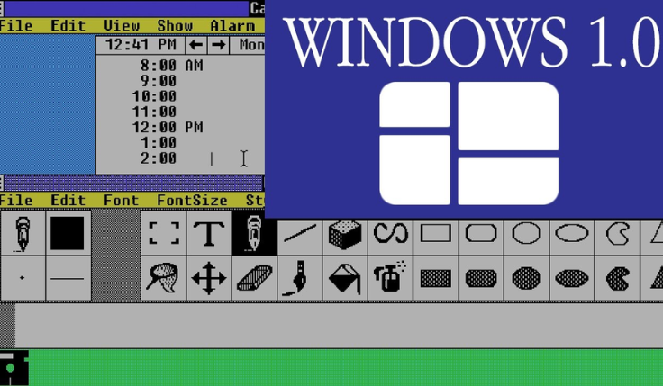
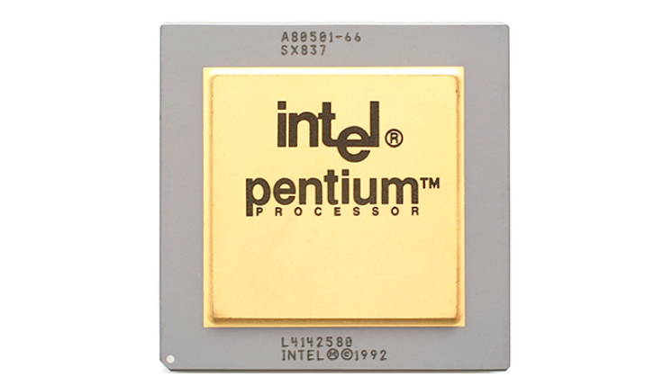
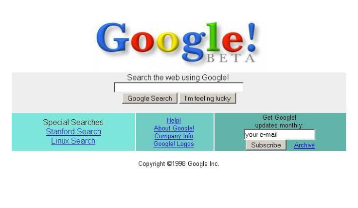
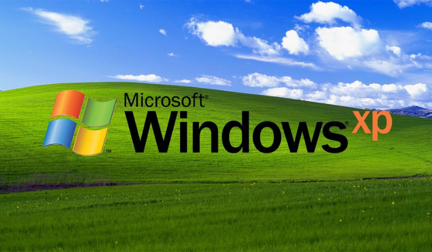

A Microsoft lança o Windows para o PC — que só vai ser bem sucedido em sua versão 3.0 (1990) — e a Commodore revela o Amiga 1000, que possui recursos avançados de áudio e vídeo.

1992
A Intel lança o microprocessador Pentium, que avança no uso de gráficos e música em computadores.

1996
Sergey Brin e Larry Page lançam o mecanismo de busca do Google.

1999
O termo Wi-Fi se populariza e os usuários passam a se conectar à Internet sem fio. A Intel lança o Pentium III.
2001
A Apple lança o Mac OS X, sistema operacional que conta com uma arquitetura de memória protegida e multitarefas preventivas. No mesmo ano, a Microsoft lança o Windows XP.

2006
A Apple lança o seu primeiro computador móvel com núcleo dual baseado na Intel — o MacBook Pro — e um iMac com processador Intel.
A Nintendo lança o console de videogame Wii.